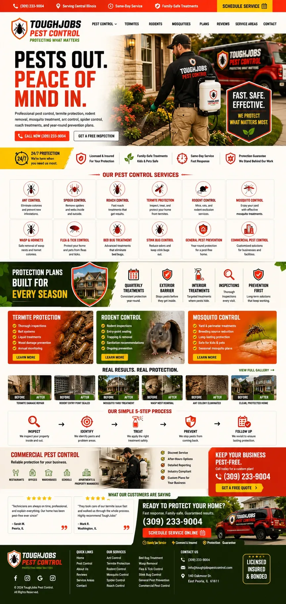

Pest Control Website Example
This pest control website example shows how a service homepage can organize pests treated, inspection, service area, safety guidance, scheduling, and follow-up. The annotated mockup calls out readability, local search context, proof, and the path to request pest control. It is a concept example, not a client case study or a claim that one layout guarantees results.
Why this site works

Free-inspection CTA up top — no cost, no risk to click.
Headline sells the outcome: pests out, peace of mind in.
Every pest type is named so searches match the exact problem.
Family-safe treatment badges remove the biggest safety objection.
Protection plans section turns a one-time job into recurring revenue.
Before/after treatment shots prove the results are real.
The inspection button repeats again right before they leave the page.
What this pest control website example is designed to do
This pest control website example is organized for the moment when a customer identifies a pest problem and needs the right treatment path. The layout gives the visitor a quick route through pests treated, inspection, service area, safety guidance, scheduling, and follow-up. Its annotations explain the design decisions; they are not performance claims or a substitute for real client evidence.
Build around the customer’s next decision
The page should help someone decide whether the company fits the job, works in the right area, and offers a sensible way to request pest control. That means clear service language before broad company slogans.
Put proof next to the claim
Useful proof here includes licenses and certifications actually held, process details, technicians, and plan terms. Real evidence should sit beside the relevant service or call to action instead of being collected in an unconnected logo strip.
Design notes from the annotated homepage
- Free-inspection CTA up top — no cost, no risk to click.
- Headline sells the outcome: pests out, peace of mind in.
- Every pest type is named so searches match the exact problem.
- Family-safe treatment badges remove the biggest safety objection.
- Protection plans section turns a one-time job into recurring revenue.
- Before/after treatment shots prove the results are real.
- The inspection button repeats again right before they leave the page.
See how this fits a broader pest control marketing plan, compare the full website example gallery, or review the local SEO foundation behind a service site.
Pest Control website FAQ
What should a pest control website include?
A useful pest control website should explain pests treated, inspection, service area, safety guidance, scheduling, and follow-up. It also needs licenses and certifications actually held, process details, technicians, and plan terms. The main action should be easy to find on a phone, and each real service should have enough detail for a customer to decide whether to request pest control.
Does a pest control website need separate service pages?
Use separate pages when the company truly offers services with different customer questions, proof, or search intent. Each page should explain the work, service area, process, limits, and next step. Do not create dozens of near-duplicate pages just to repeat a keyword or city name.
Can this pest control website example be copied exactly?
The example is design direction, not a client case study or a promise of results. A production site should use the company’s real brand, services, service area, photos, reviews, policies, and lead process. The structure should change when those inputs or the customer’s decision process are different.
Want a site like this for your trade?
We will build you a homepage engineered for calls — not just looks.